9月单月快照 + 近12个月趋势 · 分行业拆解 · 外部环境 · 政策评估 | 数据截至2026年10月20日
一句话结论：9月“外热内冷”没有改变，只是外面更热了。出口（美元）+36.3%、PPI +5.0%、工业+5.5%，把
三季度GDP托回4.5%；内需只是从低位止跌：社零+1.1%靠的是手机和补贴，固投累计仍是-7.2%，居民部门9月
一分钱新增贷款都没有，M1增速掉到3.2%。
1. GDP回到4.5%，主要靠外需。9月出口4472亿美元、顺差1335亿美元，均为历史高位；人民币计价出口
+29.6%，比社零高28个百分点。前三季度4.6%刚好在目标区间内，但增长结构更偏了。
2. PPI 5.0%是供给和输入型的涨价。煤炭出厂价+35.3%、油气开采+24.5%、有色冶炼+21.4%，生产资料贡献
了约5.07个百分点；生活资料仍是-0.1%，购进价格6.9%继续高于出厂价格。
3. 消费“止跌”的含金量不高。通讯器材+31.1%、烟酒+13.8%拉动，汽车零售-21.2%一项就拖累社零约2.3个
百分点；限额以上单位零售额仍是-2.1%。
4. 投资降幅不再扩大，但没有转正迹象。1—9月固投-7.2%与1—8月持平，9月环比+0.07%是2月以来首次为
正；房地产开发投资降幅扩大到-20.6%，民间投资-10.4%。
5. 信贷修复只在企业和政府。9月新增贷款1.08万亿元，企业1.29万亿元；住户贷款为零，1—9月住户贷款累计
减少1.03万亿元。社融3.55万亿元中政府债券占43%，企业债净偿还425亿元。
一、9月核心指标一览
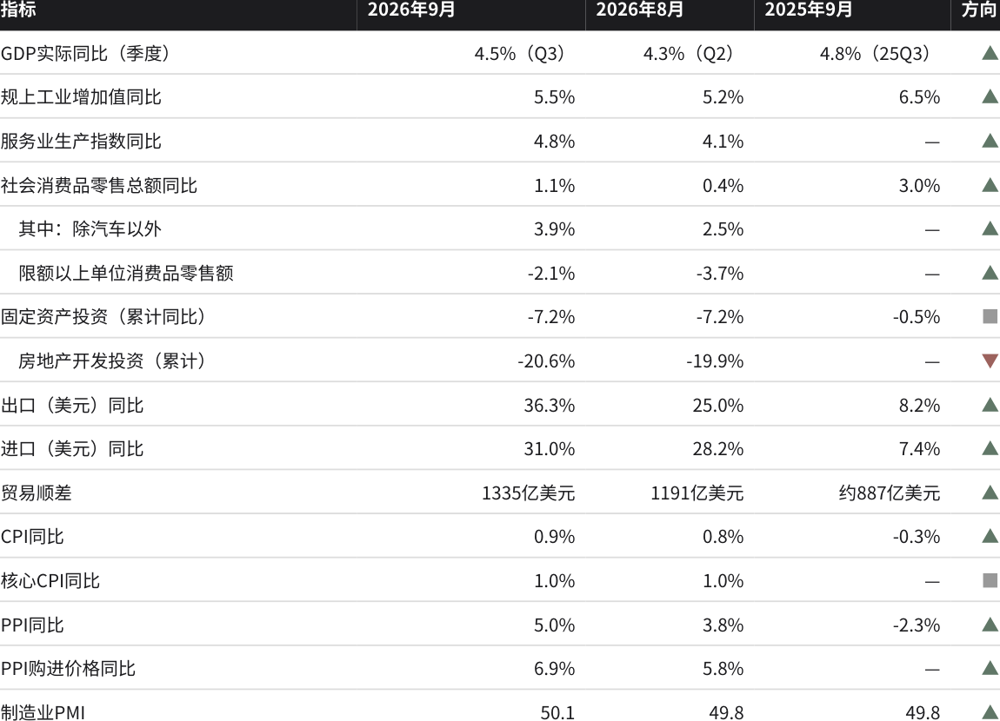
| 指标 | 2026年9月 | 2026年8月 | 2025年9月 | 方向 |
|---|---|---|---|---|
| 非制造业商务活动指数 | 50.2 | 49.0 | 50.0 | ▲ |
| M2同比 | 7.2% | 7.5% | 8.4% | ▼ |
| M1同比 | 3.2% | 4.1% | 7.2% | ▼ |
| 新增人民币贷款 | 1.08万亿元 | 600亿元 | 1.29万亿元 | ▼ |
| 其中：住户贷款 | 0 | -2029亿元 | 约3890亿元 | ▼ |
| 社融增量 | 3.55万亿元 | 1.66万亿元 | 3.53万亿元 | ■ |
| 城镇调查失业率 | 5.2% | 5.3% | 5.2% | ■ |
| 16-24岁失业率（不含在校生） | 待发布（已回落） | 18.9% | 17.7% | — |
注：1—2月数据合并发布；固定资产投资为可比口径累计同比；进出口为美元计价。2025年9月贸易顺差为按海关同比增速推算的约数；9月分年
龄组失业率截至10月20日尚未发布，统计局只披露“16—24岁比8月回落”。来源：国家统计局、海关总署、中国人民银行。
二、总量：GDP回到4.5%，生产与需求继续脱节
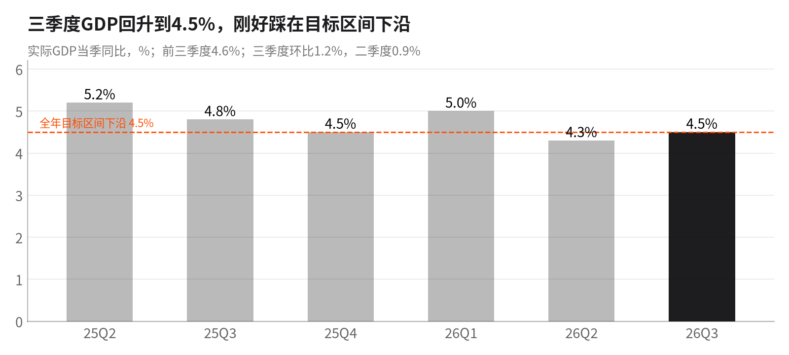
三季度GDP同比4.5%，比二季度回升0.2个百分点，环比增长1.2%（二季度0.9%）；前三季度4.6%。但分产业看，第
二产业三季度只增长3.4%，比前三季度均值3.8%还低，说明工业增加值5%以上的增速里有相当部分是出口和高技术
制造“点状”拉动，建筑业和传统工业在拖后腿。第三产业5.2%，租赁商务服务+12.3%、信息技术服务+10.4%领
跑。全年4.5%—5%的目标，四季度只需不低于约4.3%即可完成，政策加码的紧迫性因此下降，这本身是一个风险。
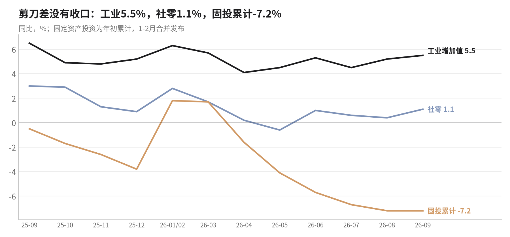
剪刀差没有收口。工业增加值9月5.5%、高技术制造业15.3%；社零1.1%，固投累计-7.2%。规上工业出口交货值9月
+17.0%，远快于工业整体，产品销售率97.0%同比下降0.2个百分点：工厂开工主要靠外单，国内需求接不住。三季度
工业产能利用率73.1%，比上年同期低1.5个百分点，汽车制造只有66.2%（同比-7.1个百分点），煤炭64.8%，非金属
矿物61.2%。
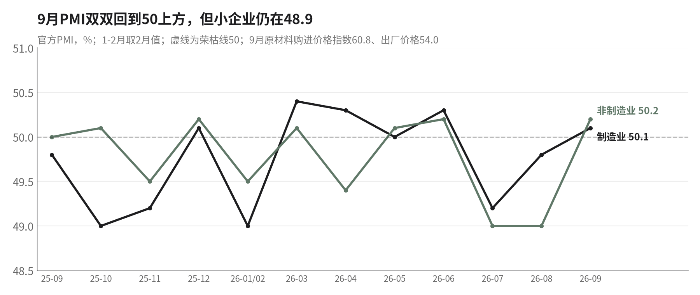
9月制造业PMI 50.1、非制造业50.2，双双回到荣枯线上方，建筑业从46.9跳到50.3，与新型政策性金融工具9月集中投
放相吻合。但分规模看，大型企业50.6，中型49.7，小型企业48.9，仍在收缩；从业人员指数48.4，比上月下降0.3。
原材料购进价格指数60.8、出厂价格54.0，价格压力继续向中游积累。
三、价格：PPI升到5.0%，涨价仍停在上游
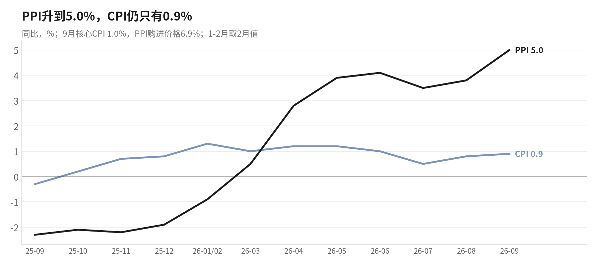
PPI从2025年9月的-2.3%升到2026年9月的+5.0%，一年上了7.3个百分点，9月环比+1.2%；CPI只有0.9%，核心CPI
1.0%。CPI里涨得多的是交通工具用能源（+14.9%）和通信工具（+14.3%），前者是油价，后者是手机涨价；食
品-1.7%、猪肉-10.0%、鲜菜-8.1%，服务价格只涨0.8%，房租-0.6%。也就是说，CPI的“温和上涨”主要来自输入
型能源和个别商品，不是需求拉动。
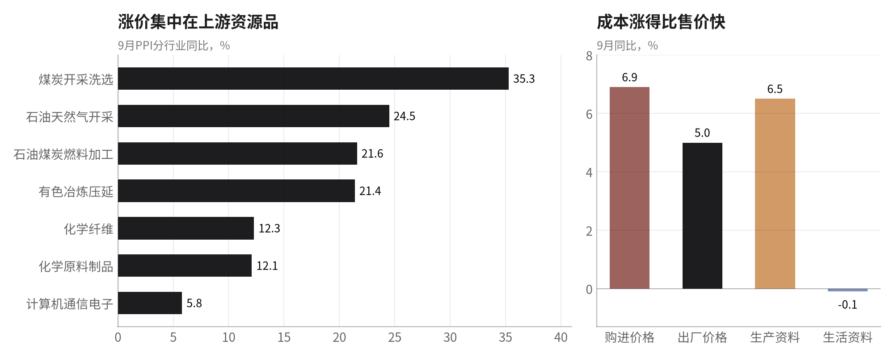
9月生产资料价格+6.5%，拉动PPI约5.07个百分点，超过PPI整体涨幅；生活资料-0.1%，拖累约0.03个百分点。行业
上，煤炭开采+35.3%（环比+9.5%）、油气开采+24.5%、石油煤炭燃料加工+21.6%、有色冶炼+21.4%、化工
+12.1%；而酒饮料-5.3%、电力-3.9%、医药-3.3%、非金属矿物-2.5%、汽车-2.0%仍在下跌。煤价的跳涨与三季度煤
炭产能利用率64.8%（同比-4.1个百分点）、9月原煤产量-6.8%直接对应，是安全整治和超产核查压出来的；油价和有
色则是输入型。购进价格6.9%比出厂价格高1.9个百分点，汽车、电力、医药这类下游行业一边买贵原料，一边卖不
上价，利润被两头挤压。
四、分行业拆解
4.1 工业：电子和装备继续领跑，资源和建材收缩
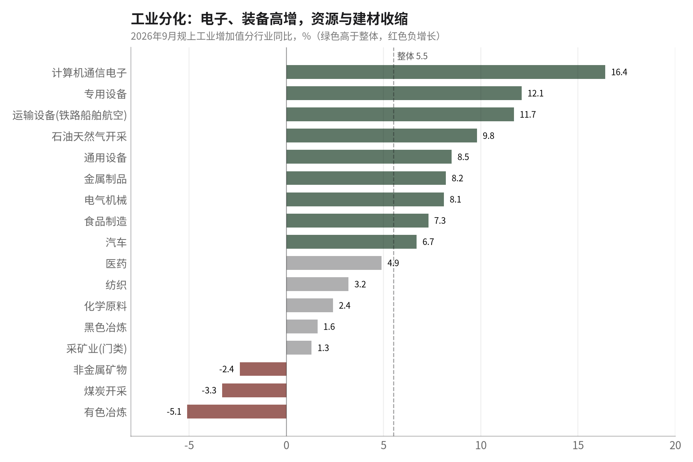
41个大类行业中31个增长，比8月多2个。计算机通信电子+16.4%、专用设备+12.1%、运输设备+11.7%、油气开采
+9.8%；高技术制造业+15.3%，比整体快9.8个百分点。另一端是有色冶炼-5.1%、煤炭-3.3%、非金属矿物-2.4%。分
所有制，国有控股3.6%、私营3.8%、外资3.7%，都明显低于整体5.5%，只有股份制企业（6.0%）高于整体，增长集
中度依然很高。
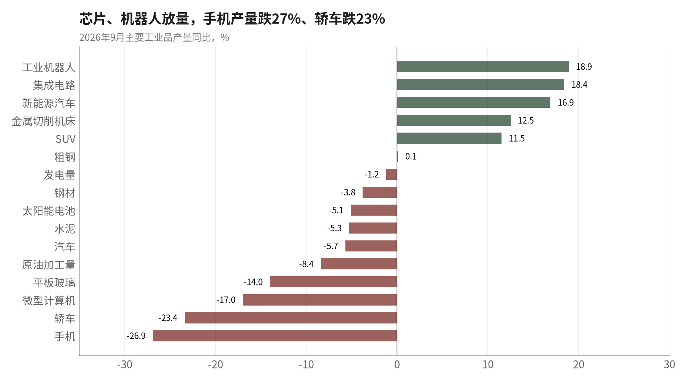
产品层面：工业机器人+18.9%、集成电路+18.4%、新能源汽车+16.9%；但手机-26.9%（智能手机-26.6%）、轿
车-23.4%、微型计算机-17.0%、平板玻璃-14.0%。手机产量跌27%与通讯器材零售涨31%同时出现，说明国内手机
销售主要靠补贴消化库存和进口高端机型，国内整机产能在收缩或外迁。汽车总产量-5.7%，其中轿车大跌、
SUV+11.5%，是购置税减半后低价轿车需求塌陷的结果。光伏电池-5.1%，前三季度累计-13.5%，“反内卷”下的减
产仍在继续。
4.2 消费：止跌，但靠手机和补贴
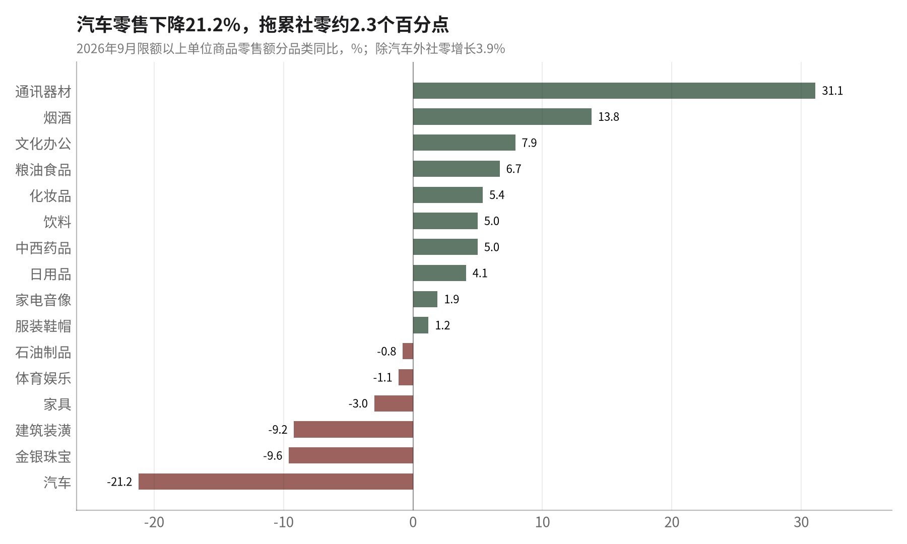
9月社零42433亿元，同比1.1%，比8月加快0.7个百分点，环比+0.35%。拆开看：通讯器材+31.1%（8月下旬起信用
卡分期贴息扩围、叠加新机上市）、烟酒+13.8%、文化办公+7.9%、粮油食品+6.7%是主要拉动；家电由8月的2.3%
降到1.9%，前三季度累计仍是-4.9%。汽车零售-21.2%，比8月的-18.5%更差，一项就拖累社零约2.3个百分点；金银
珠宝-9.6%、建筑装潢-9.2%、家具-3.0%，与地产链疲弱一致。限额以上单位零售额-2.1%，百货店、品牌专卖店前三
季度分别下降2.9%、10.3%。前三季度居民人均消费支出实际增长2.7%，低于人均可支配收入4.4%的实际增速，居民
在多存少花。
4.3 投资：降幅止步，结构仍差
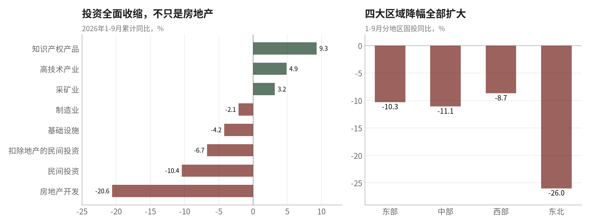
1—9月固投-7.2%，与1—8月持平，结束了连续5个月的降幅扩大；9月环比+0.07%，是2月以来首次正增长。这与
8000亿新型政策性金融工具8月底到9月集中投放、建筑业PMI升到50.3相吻合。但基建累计仍是-4.2%（8月-4.0%），
水利管理-14.4%、公共设施管理-12.8%，政策资金还没有扭转基建的方向。制造业-2.1%（8月-2.3%）略有改善，运
输设备+15.8%、电子+9.6%，而汽车-6.3%、化工-7.5%、医药-8.1%、专用设备-8.9%。民间投资-10.4%，扣除地产
后-6.7%，都比8月更差。分地区，东部-10.3%、中部-11.1%、东北-26.0%，降幅全部扩大。设备工器具购置+9.7%、
建安工程-10.0%，设备更新补贴撑住了一部分。
4.4 房地产：一线企稳，全国还在下行
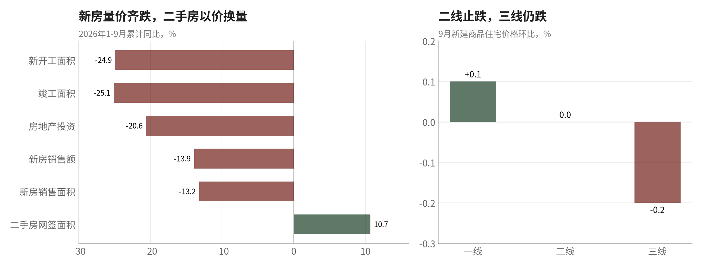
1—9月开发投资-20.6%（1—8月-19.9%），新开工面积-24.9%，竣工面积-25.1%，新房销售额-13.9%；二手房网签
面积+10.6%→+10.7%，仍是以价换量。房企到位资金-21.6%，其中国内贷款-33.1%、个人按揭-22.1%，“828新
政”要求预售项目竣工后才放按揭，对房企现金流的压力开始显现。房价方面，9月一线城市新房环比+0.1%（上海
+0.2%、广州+0.2%、深圳+0.3%，北京-0.2%），二线城市由-0.1%转为持平，三线-0.2%；新房环比上涨城市17个，
比上月多2个。一线二手房环比+0.2%。止跌在扩散，但同比仍全部为负（一线新房-0.5%，三线-3.9%）。
五、金融：企业借、政府借，居民不借
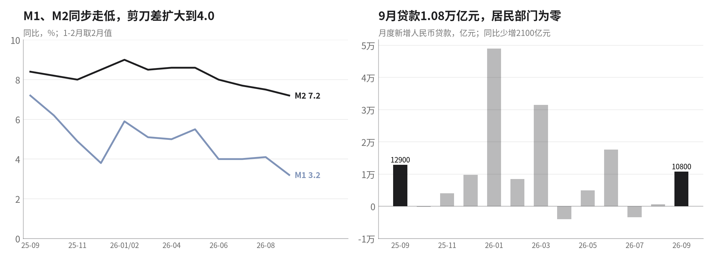
9月新增人民币贷款1.08万亿元，比8月的600亿元大幅回升，但比去年同期少2100亿元；1—9月累计11.52万亿元，比
去年同期少3.23万亿元。住户贷款9月为零：短期贷款减少900亿元，中长期贷款只增874亿元，前三季度住户贷款累计
减少1.03万亿元。企业贷款1.29万亿元，其中中长期8900亿元、短期4600亿元，9月29日PSL降息和再贷款扩容有一定
作用。M2同比7.2%、M1 3.2%，都比8月低，M2-M1剪刀差扩大到4.0个百分点，资金沉淀在定期存款里，没有进入消
费和投资。
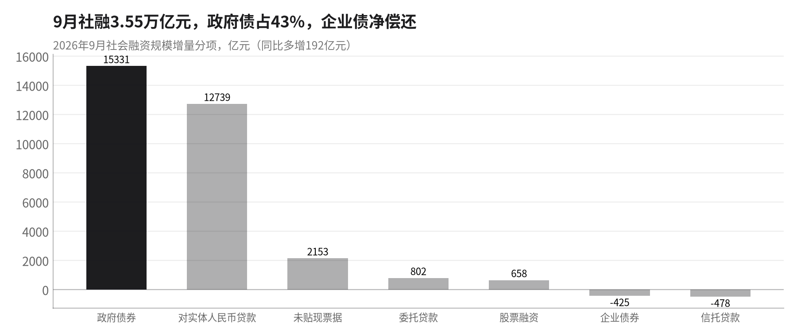
9月社融3.55万亿元，同比只多增192亿元；其中政府债券1.53万亿元（多增3438亿元），占43%；对实体人民币贷款
1.27万亿元，少增3342亿元；企业债券净偿还425亿元。存量社融增速7.1%，比8月再降0.1个百分点。货币政策总量
仍然没有动：10月20日LPR连续第17个月不变，7天逆回购1.4%自2025年5月以来未调整。
六、就业：总体回落，青年数据推迟
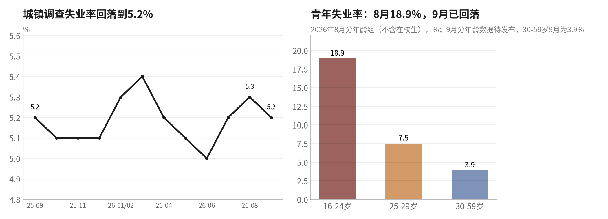
9月城镇调查失业率5.2%，比8月下降0.1个百分点，31个大城市5.2%；外来农业户籍劳动力5.0%。30—59岁主力人群
三季度每月都是3.9%。分年龄组的9月数据截至10月20日尚未发布，统计局只说16—24岁失业率“比8月回落”，8月
是18.9%、去年9月是17.7%。前三季度城镇新增就业1052万人，完成全年目标87.7%。企业就业人员周平均工作时间
48.3小时，制造业PMI从业人员指数48.4，企业在用加班而不是扩招来应对订单。
七、外贸与海外经济：增长最大的支撑，也是最大的变量
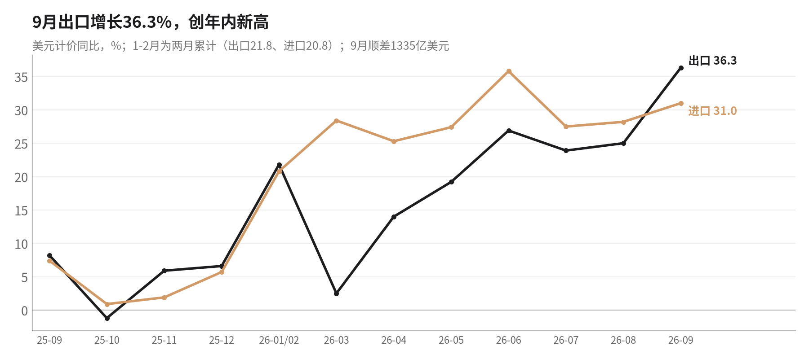
9月出口4471.8亿美元（+36.3%），进口3136.5亿美元（+31.0%），顺差1335.3亿美元，比8月多144亿美元；1—9月
累计顺差9381亿美元。出口环比增长11.4%，部分是2025年9月低基数，部分是“30换30”清单和休战延期前后的提
前出货。人民币计价出口+29.6%，比美元口径低6.7个百分点，人民币升值在吃掉企业利润。
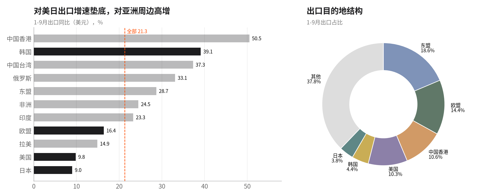
美国：9月单月对美出口+39.6%，1—9月累计+9.8%，美国占中国出口约10.3%。欧盟：9月对欧出口+25.3%，比8月
的6.6%明显反弹，混动车谅解谈判期间出口前置。东盟：9月+52.3%，转口和产业链外迁两种效应叠加。日本：1—9
月对日出口+9.0%，增速最低。韩国、中国台湾：9月对韩出口+68.2%、对台+68.9%，自韩进口+94.3%：AI芯片链的
双向放大。
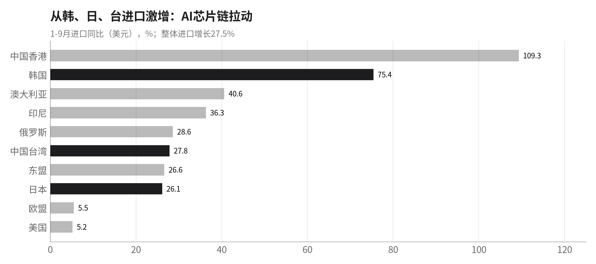
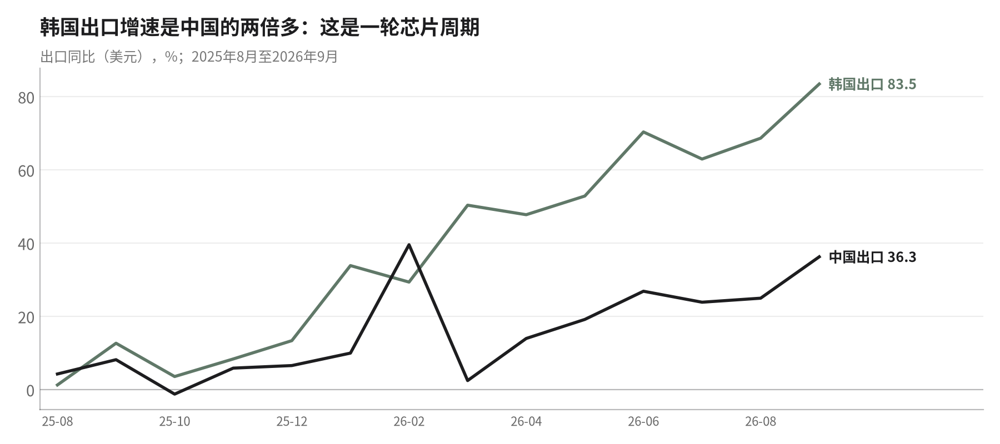
韩国9月出口+83.5%，中国9月出口+36.3%，两者同步加速。中国出口的高增长和全球AI资本开支绑在一起：从韩
国、中国台湾进口存储和算力芯片，加工成服务器和电子组件出口到中国香港、东盟、美国。这条链条一旦降温，出
口、工业和GDP会同时回落。
海外经济：需求仍强，通胀和加息压力加大
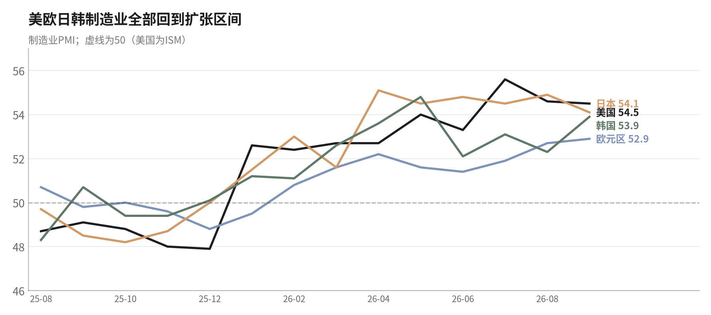
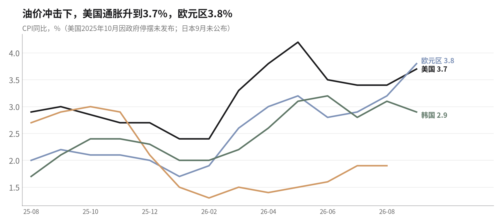
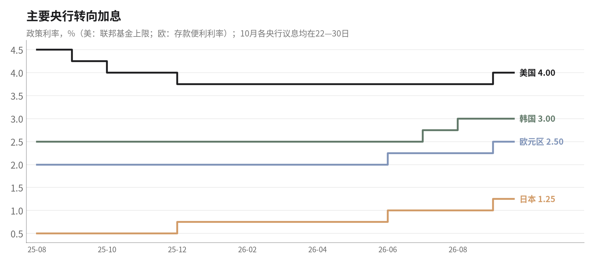
| 经济体 | 9月制造业PMI | 9月CPI同比 | 政策利率（10月20日） | 2026Q2GDP | 对中国的含义 |
|---|---|---|---|---|---|
| 美国 | 54.5（ISM） | 3.7%（8月3.4%） | 4.00%（10月27—28日议息） | 年化+2.2% | 通胀回升，期货隐含10月再加息概率约54%；关税休战到2027.1.10 |
| 欧元区 | 52.9 | 3.8% | 2.50%（10月29日议息） | 环比+0.6% | 能源推高通胀；混动车谅解后对欧出口反弹 |
| 日本 | 54.1 | 8月1.9%（9月10月23日公布） | 1.25%（10月30日议息） | 年化+1.4% | 日元兑人民币13个月跌11.8%，中日在汽车、机械上直接竞争 |
| 韩国 | 53.9 | 2.9% | 3.00%（10月22日议息） | 环比+0.6% | 芯片出口+83.5%，中韩电子链同步扩张 |
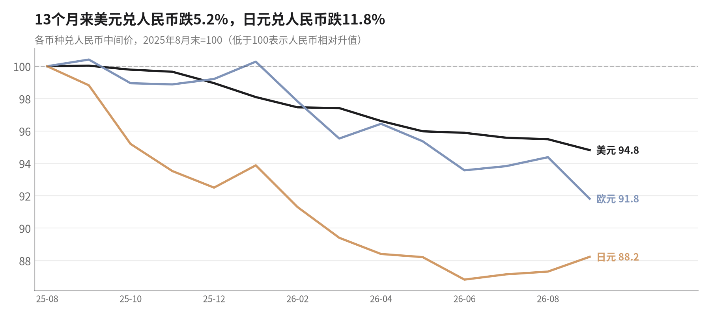
判断：海外制造业仍在扩张，四大经济体PMI都在52以上，是中国出口创新高的真实背景。但风险在增加：一是美国9
月CPI升到3.7%，美联储10月可能再次加息，高利率滞后2—4个季度压制耐用品进口；二是人民币对美元13个月升值
约5.2%，10月20日中间价6.7200，为2023年2月以来最强，出口企业的人民币收入在缩水；三是中美休战只延到2027
年1月10日，“30换30”降税日期未定，美方部分豁免文件仍写11月到期，四季度出口前置之后，明年一季度可能回
落。
八、近期实打实的政策及其效果
只列有文件、有金额或有执行日期的措施。来源为国务院、人民银行、财政部、发改委、商务部、住建部、USTR、欧盟委员会等官方文件及新华
社、路透、财新等报道。
| 时间 | 部门 | 措施 | 规模/要点 | 对9月数据的影响 |
|---|---|---|---|---|
| 2025.5起 | 人民银行 | 7天逆回购1.4%、1年LPR 3.0%、5年LPR 3.5% | 10月20日LPR连续第17个月不变；2026年未降准降息 | 总量偏紧，居民信贷9月为零 |
| 2026.3 | 财政部/全国人大 | 赤字率约4%；超长期特别国债1.3万亿；专项债4.4万亿 | 以旧换新2500亿（2025年3000亿），分4批每批625亿 | 汽车零售9月-21.2% |
| 2026全年 | 财政部 | 新能源车购置税由全免改为减半 | 单车最多多缴约1.5万元 | 轿车产量9月-23.4% |
| 2026.8.1 | 财政部等 | 消费贷/信用卡分期贴息上限3000→5000元 | 银行8月下旬起执行 | 9月通讯器材+31.1%、家电由负转正 |
| 2026.8底—9月 | 发改委/政策性银行 | 新型政策性金融工具8000亿元首批投放 | 带动项目总投资约10万亿 | 9月固投环比+0.07%，2月以来首次为正 |
| 2026.8.28 | 住建部、央行等 | “828新政”：新地块现房销售；预售需结构封顶；竣工后放按揭；房贷最长40年 | 各地细则9—10月陆续落地 | 新开工-24.9%、房企国内贷款-33.1% |
| 2026.9.29 | 人民银行 | PSL利率1.75%→1.5%；科技再贷款扩至1.4万亿；民企再贷款扩至1.3万亿 | 结构性工具，不是总量宽松 | 企业中长期贷款9月8900亿元 |
| 2026.9.30 | 发改委、财政部 | 第四批以旧换新资金625亿元 | 全年2500亿元全部下达 | 四季度消费仍有补贴，但不会更多 |
| 2026.10.1 | 财政部等 | 首套房（≤120㎡、≤150万元）商贷贴息1个百分点、最长5年 | 免申即享，暂定1年 | 9月尚未体现 |
| 2026.10.9 | 财政部 | 地方政府债务结存限额5500亿元 | 一般债3000亿给县区；专项债2500亿投“六张网” | 四季度基建资金补充 |
| 2026.9.23 / 10.12 | 中美 | 休战延至2027.1.10；“30换30”降税清单（各约300亿美元，90%以上降到最惠国税率） | 实施日期未定；美方部分豁免文件仍写11月到期 | 对美出口9月+39.6% |
| 2026.10.8—9 | 中欧 | 混动车贸易谅解等16项共识 | 以2025年欧盟自华进口30.2万辆为基础“向上安排” | 对欧出口9月+25.3% |
| 2026.10.16 / 10.19 | 商务部 | 技术出口限制目录拟新增40项（AI、光伏、生物医药）；盾构机、无人机等两用物项出口管制11月18日起实施 | — | 出口管制范围扩大 |
政策评估
1. 财政在“补窟窿”，不是在“扩需求”。5500亿结存限额中3000亿给县区补一般预算，专项债2500亿投“六张
网”；以旧换新全年2500亿已全部下达，比2025年少500亿。四季度的增量资金主要用于保运转和基建，直接给居民
的钱没有增加，汽车零售的负增长不会因此扭转。
2. 货币政策继续只用结构性工具。LPR连续17个月不变，2026年没有降准降息；9月29日的PSL降息和再贷款扩容，对
应的是企业中长期贷款回升，而居民贷款为零。在PPI已到5.0%、GDP回到4.5%的情况下，央行降息的理由进一步减
弱，但居民去杠杆和M1走低说明总量宽松的必要性仍在。
3. 增量工具开始见效，但只在投资端。8000亿政策性金融工具9月集中投放后，建筑业PMI升到50.3、固投环比转正。
这是9月最实在的政策效果，但规模不足以抵消地产和民间投资的下滑。
4. “反内卷”和安全整治抬高了上游价格，伤到了中下游。煤炭产能利用率降到64.8%、煤价同比+35%，下游的电
力、汽车价格还在跌。供给收缩换来的PPI上涨，在内需疲弱时只是利润在行业间重新分配。
5. 地产政策方向是对的，节奏在压制短期数据。“828新政”和10月1日起的首套房贴息有助于修复购房者信心，一线
房价也在企稳；但现房销售和竣工后放款让房企资金更紧，国内贷款-33.1%，开发投资降幅还会扩大。
九、主要问题与风险清单
| 问题 | 证据（9月数据） | 风险判断 |
|---|---|---|
| 增长过度依赖外需 | 出口+36.3%、高技术制造+15.3%、对韩台出口+68%；二产三 | 高：AI资本开支或关税任一转向，出 |
| 和单一产业 | 季度仅3.4% | 口、工业、GDP同时回落 |
| 居民不借钱、不花 | 住户贷款9月为零、前三季度-1.03万亿；人均消费支出实际 | 高：消费和地产缺乏自发修复动力 |
| 钱 | +2.7%低于收入+4.4% | |
| 成本推动型通胀 | PPI 5.0%、购进6.9%，生活资料-0.1%，CPI 0.9% | 中高：中下游利润被挤压；也削弱降息理由 |
| 汽车链收缩 | 汽车零售-21.2%、轿车产量-23.4%、汽车产能利用率66.2% | 高：补贴退坡+购置税减半，四季度高基数下继续承压 |
| 地产后续 | 开发投资-20.6%、新开工-24.9%、房企国内贷款-33.1% | 高：828新政过渡期内投资降幅可能继续扩大 |
| 货币活化不足 | M1 3.2%、M2-M1剪刀差4.0 | 中：资金停在存款里，政策传导效率低 |
| 外部政策 | 美国CPI 3.7%、美联储或再加息；人民币升至6.72；中美休战2027.1.10到期；中方扩大出口管制 | 中：四季度抢出口后，明年一季度可能回落 |
接下来要看的数据和事件：10月22日韩国央行议息、9月分年龄组失业率；10月23日日本9月CPI；10月26—29日
二十届五中全会（议题为党建）；10月27日1—9月工业企业利润（1—8月+15.7%）；10月27—28日美联储议
息；10月29日欧央行；10月30日日本央行；10月31日10月PMI。重点关注：住户贷款能否转正、汽车零售降幅
是否收窄、出口在高基数和提前出货后的回落幅度。
附：数据来源
国家统计局：2026年前三季度国民经济运行情况、三季度GDP、9月规上工业增加值、社零、1—9月固投、房地产、70城房价及解读、三季度产
能利用率、9月CPI/PPI、9月PMI（2026年9月30日—10月20日发布）。海关总署：2026年9月进出口及分国别数据（10月14日）。中国人民银
行：2026年9月金融统计数据报告（10月14日）、10月LPR。财政部：地方债结存限额（10月9日）。海外：BLS（9月CPI，10月14日）、
Eurostat（9月HICP终值，10月16日）、ISM、S&P Global、美联储、欧央行、日本央行、韩国央行、韩国产业通商资源部；汇率为人民币中间
价。数据整理使用AKShare并逐项与官网核对。未能核实或尚未发布：9月分年龄组失业率、日本9月CPI、9月社融中外币贷款分项、2025年9月
贸易顺差为推算值。